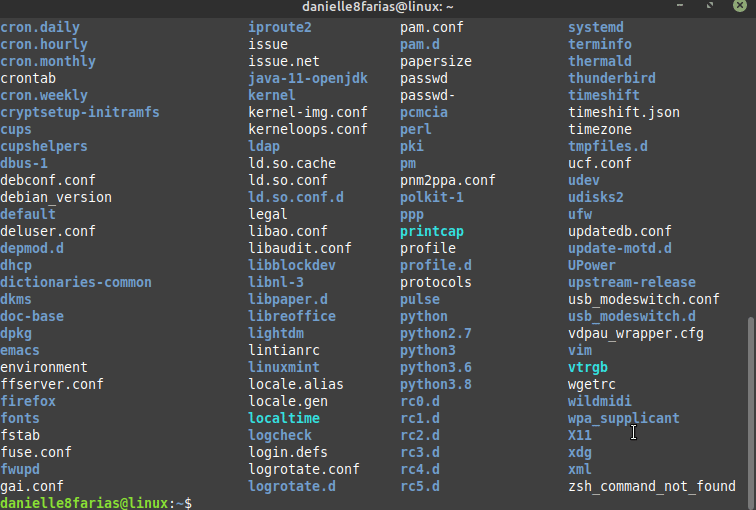

É bem comum de acontecer do terminal ficar cheio de comandos, enquanto estamos usando-o. Caso precise limpar a tela, como se você tivesse acabado de abrir um terminal novo, basta digitar o comando
$ clear
- $ indica que você deve usar o usuário comum para fazer essa operação.
Usando um atalho
Ou ainda, usar o atalho Ctrl + L (pressionar a tecla control e a tecla L ao mesmo tempo).
